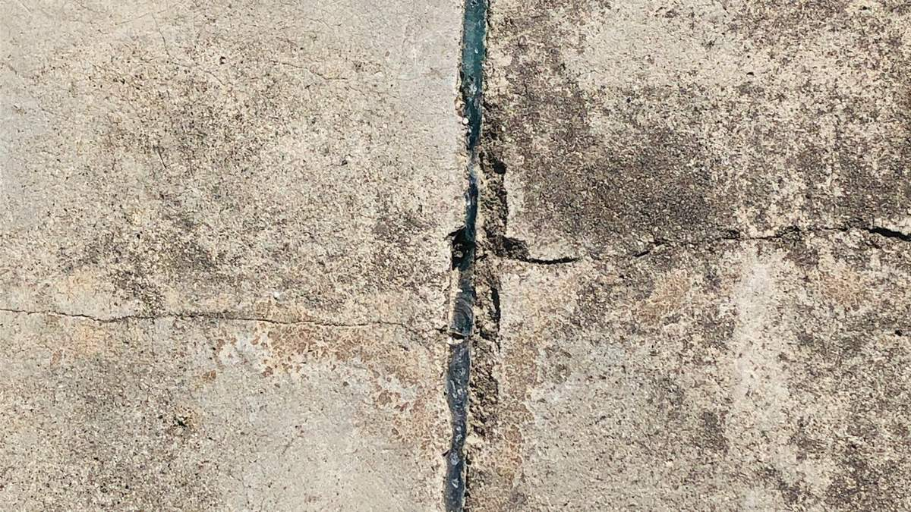

Foundation Repair in Garden City
Built in 1939 to house port and factory workers, and still sitting alongside the busiest single container terminal on the East Coast.
ZIP 31408 and the surrounding area
Garden City was incorporated on 8 February 1939 as Industrial City Gardens – literally a community created to house the workforce for the new factories and chemical plants west of downtown Savannah – and renamed in 1941. It is now home to the Georgia Ports Authority's largest and busiest ocean terminal. Two things follow for foundations. The core housing stock is small, economically built mid-century workforce housing, much of it eighty years old, on shallow footings or slabs poured to the standards of the day. And the ground is low, filled, industrial river-plain land rather than the sandy ridge the older parts of Savannah sit on.

Garden City, GAModest houses, real structural work
Mid-century workforce housing was built to a price – thinner slabs, shallower footings, less soil preparation underneath. That does not make a house unrepairable. It does mean the fix is often adding support that was never there to begin with, rather than replacing support that failed, and that is a different conversation than the one a 1990s house needs.
- Shallow footings under 1940s–60s workforce housing
- Slab cracking on low, filled river-plain ground
- Settled driveways, steps and entry slabs
What we handle in Garden City
Foundation repair in Garden City – common questions
Is a small older house actually worth repairing?
Usually yes, and usually for less than people assume. Support work under a modest single-story house is a smaller job than under a large two-story one, because there is less load and better access. We price on the number of support points and the difficulty of getting to them, not on what the house is worth.
Does all the port and truck traffic nearby affect foundations?
Honestly, not much. Vibration from nearby traffic gets blamed for a lot of cracks that are actually soil and moisture movement. We would rather measure and tell you it is the ground than sell you a story about the trucks.
Do you serve all of Garden City?
Yes, the whole of Garden City in 31408, from the older streets near Augusta Road out to the newer sections.
We also work in these areas
Something moving at your place in Garden City?
Free inspection, real measurements, and a straight answer on whether it needs work now.